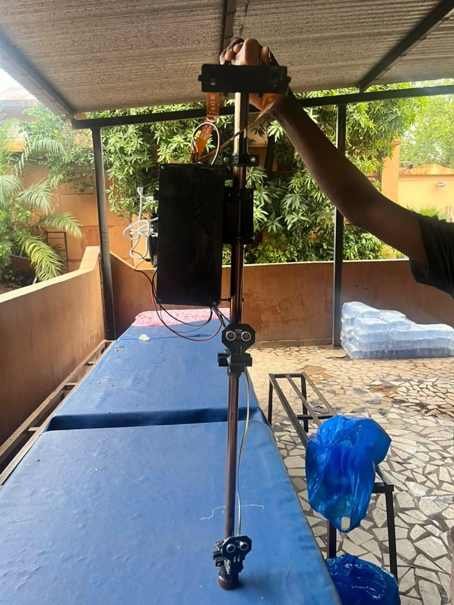
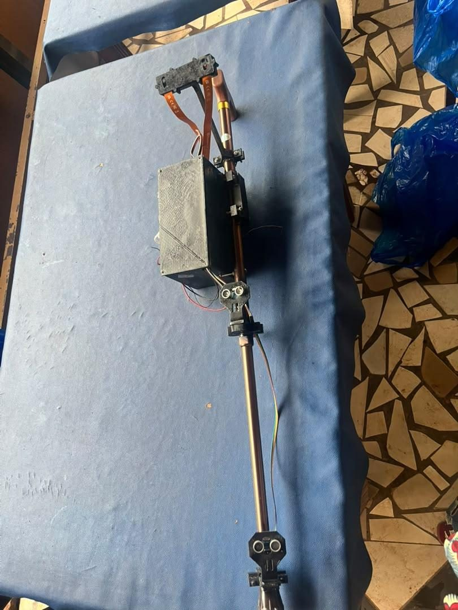
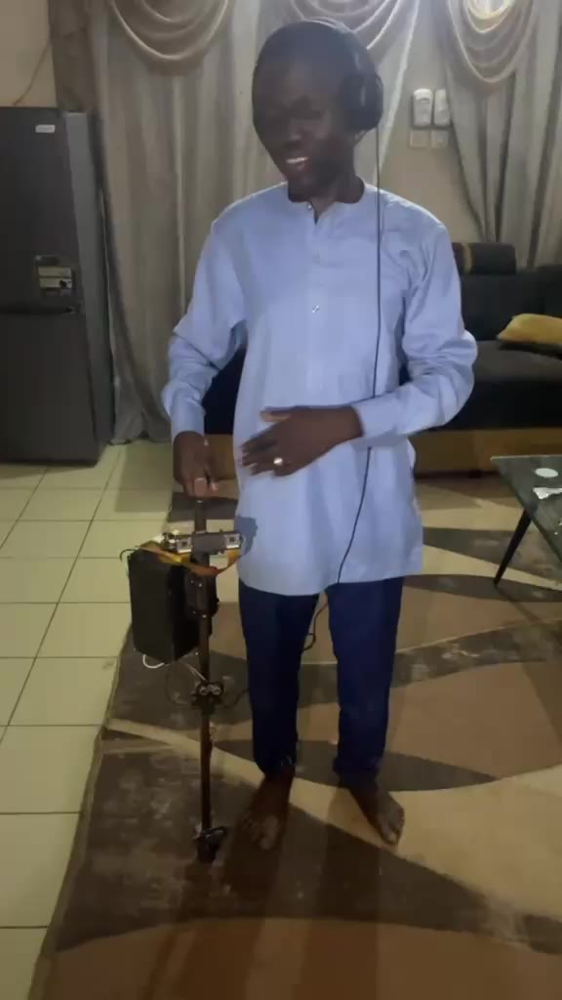

An AI smart cane that sees, speaks and calls for help, built in Bamako for West Africa.
GUIDE helps blind and visually impaired people detect obstacles, measure how far away they are, recognize CFA franc banknotes and send an SOS with their location. Everything runs on the cane itself, with no internet and no smartphone.
Prototype demonstration, English subtitles (1 min 43)
A white cane only finds what it touches. It misses obstacles at head height, gives no distance, cannot tell a 500 franc note from a 10,000 franc note, and cannot call anyone in an emergency. Electronic aids sold abroad are costly, need a smartphone and a data connection, and know nothing about local money or local streets.
A YOLOv8 vision model recognizes people, vehicles and objects in real time and says what is ahead.
Two cameras 8 cm apart triangulate the distance to each object; two ultrasonic sensors cover the ground close by.
A custom model trained on about 1,600 photos identifies CFA franc notes, so the user is not cheated when paying.
GPS plus an offline map of Bamako with about 13,600 points of interest tells the user where they are.
A long press sends an SMS with a live map link to a family member through the cane's own GSM module.
French voice commands and spoken answers through a headset, with vibration that grows stronger as an obstacle gets closer.


Each function was tested against a target set before building. Four targets are met. The four others show exactly what the next version must improve.
| Function | Target | Measured | Status |
|---|---|---|---|
| Distance estimation | < 10 % error | 9.53 % (3.92 % from 1 to 5 m) | Met |
| SOS alert by SMS | < 15 s | 7.4 s | Met |
| GPS location | < 10 m | 6.66 m | Met |
| Audio and haptic feedback | Both working | Working | Met |
| Voice command recognition | > 90 % | 82.85 % | Next version |
| Detection speed | > 25 FPS | 9.66 FPS average | Next version |
| Battery life | ≥ 3 h | 2 h 46 | Next version |
| Weight | Light and portable | 1.6 kg | Next version |
Banknote model accuracy: mAP50 of 0.981 on the CFA franc test set.
Built, tested and defended at ENI-ABT, October 2026.
Move depth computation to the AI accelerator, a single integrated circuit board and a smaller case.
Trials with blind users and associations in Bamako to refine voice commands and ergonomics.
Local assembly in Mali, sold to families, NGOs and health programs, then across the CFA franc zone.

Engineer in electrical and electronic systems, École Nationale d'Ingénieurs Abderhamane Baba Touré (ENI-ABT), Bamako. Designed the hardware, the embedded software and the AI models of GUIDE. Project supervised by Dr. Ing. Alhabib BINKOU and Dr. Ing. Mahamadou Négué DIARRA.